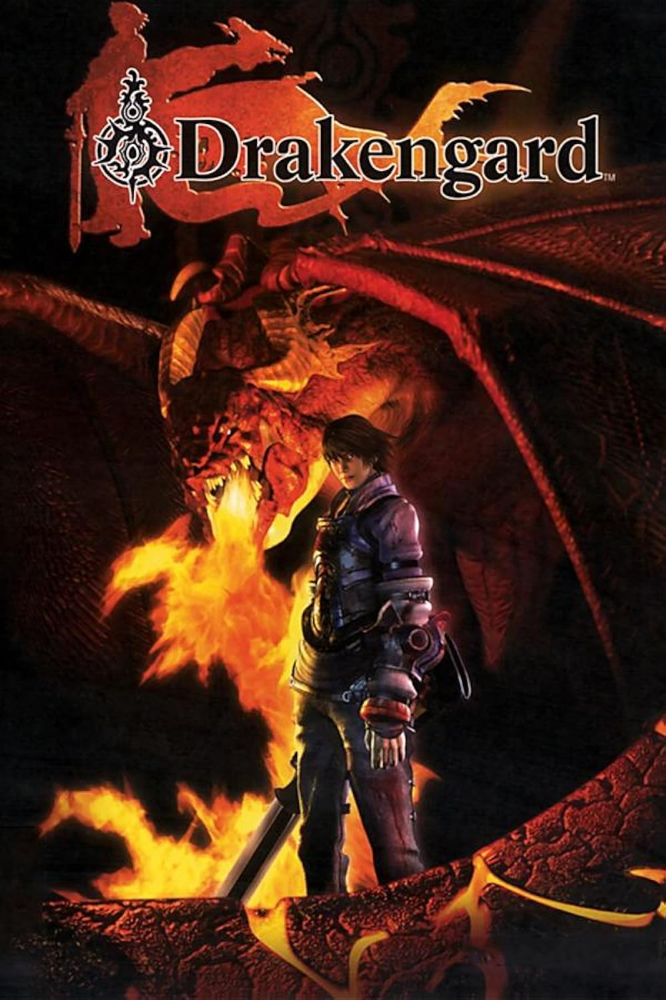

Yoko Taro is a video game developer/director well known for his work on the Drakengard/Nier series.



| Effects of each game | |
|---|---|
| Drakengard | Started the whole franchise (inspired by Neon Genesis Evangelion) |
| Drakengard 3 | A prequel to Drakengard that is often praised for its great story |
| Nier Replicant/Gestalt | Nier Gestalt introduced the series to the west |
| Nier Automata | A huge gamble but an even bigger success that got most fans into the series |
| Nier Replicant ver.1.22474487139 | Has an amazing soundtrack that many consider the best in gaming history |
Wiki
Interview
Yoko Taro "Invisible Wall"